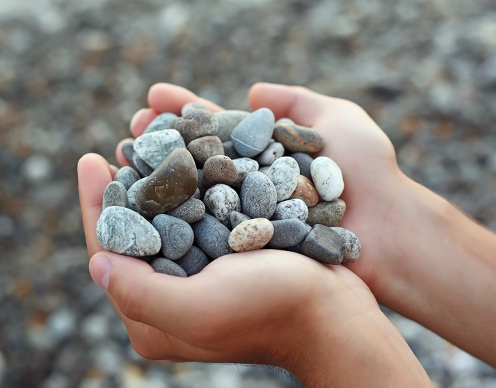
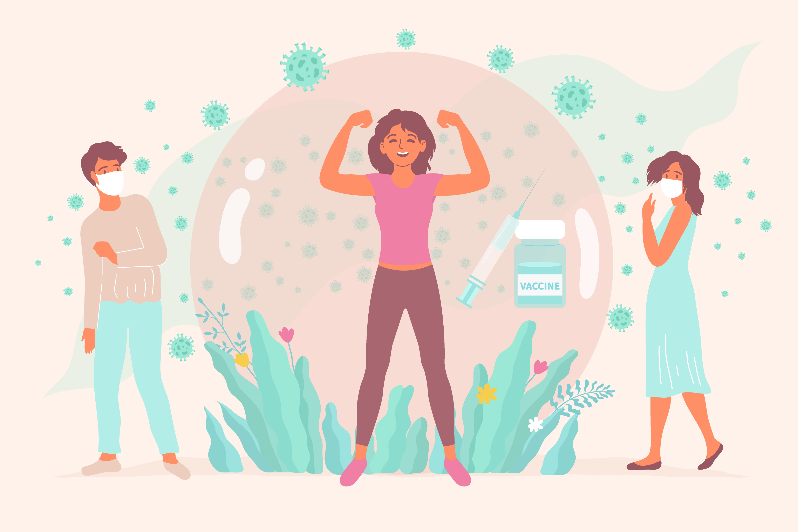
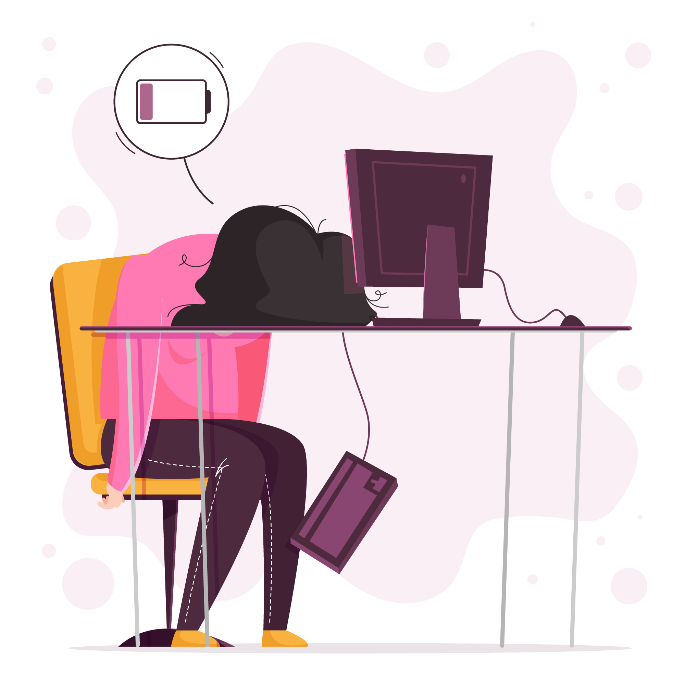
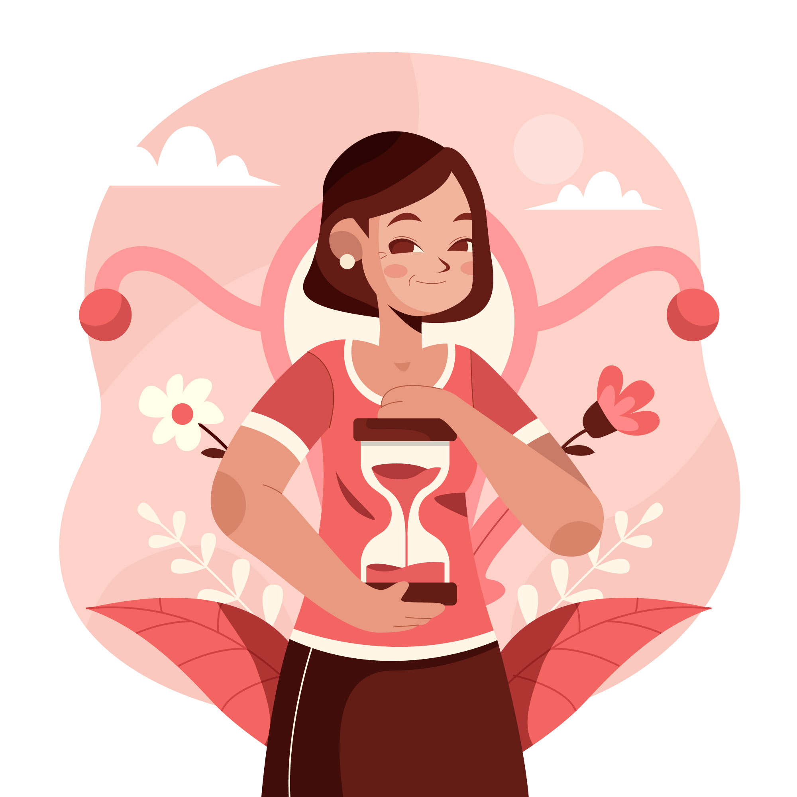

Natural Stress Relief
Gentle ways to calm anxiety and reduce daily stress with herbs and mindfulness.
Natural Stress Relief
Gentle ways to calm anxiety and reduce daily stress with herbs and mindfulness.
Improve Digestion Naturally
Herbs and foods to soothe bloating and support gut balance.

Fall Asleep Faster
Herbal rituals and routines for restful nights.

Strengthen Immunity
Natural foods and herbs to support your body's defenses.

Combat Fatigue
Sustainable ways to increase daily energy levels.

Balance Hormones Naturally
Gentle support for hormonal health and well-being.